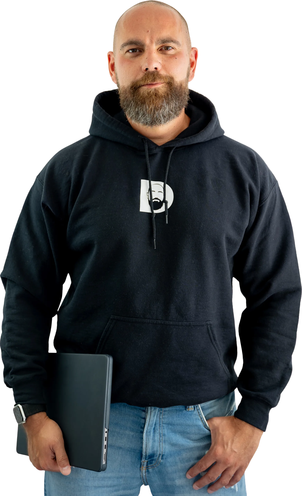
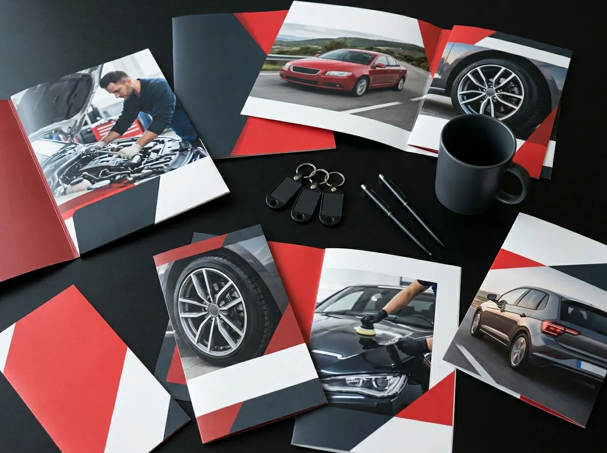
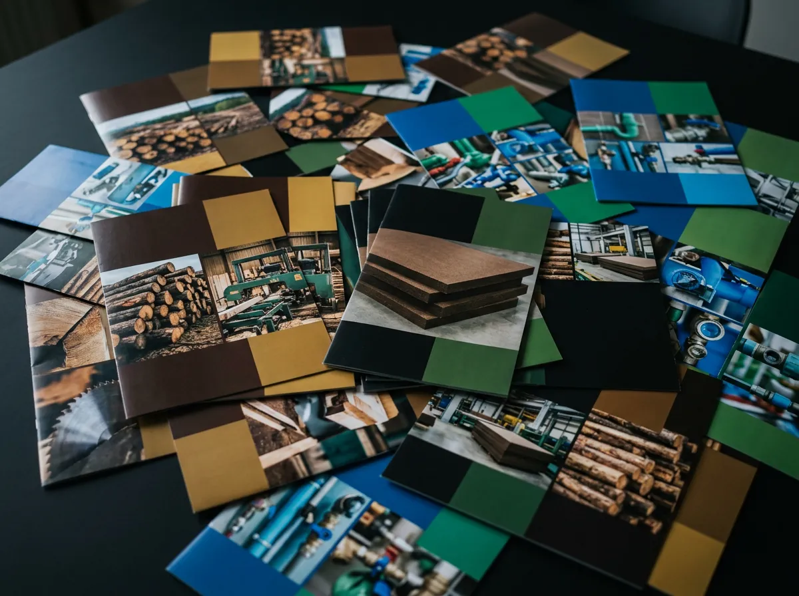
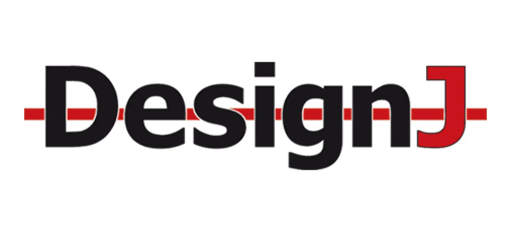
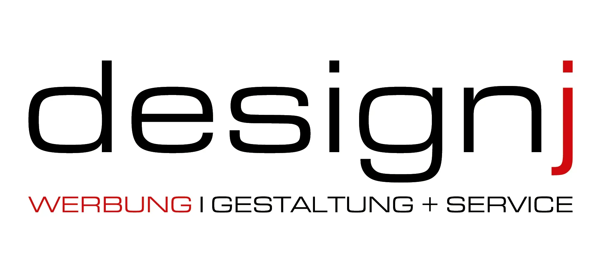
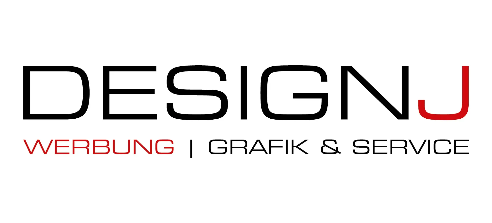
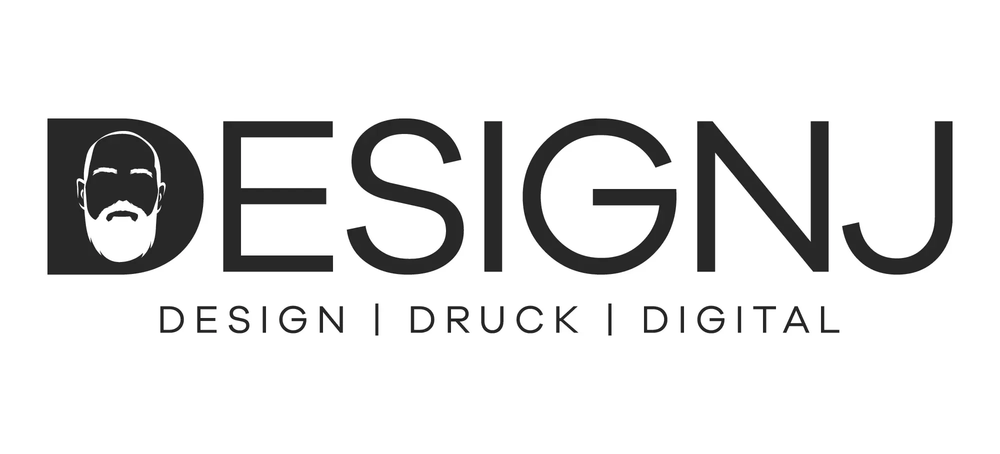

Leidenschaft
& Kompetenz.
Erfahrung mit Herzblut. Leidenschaft mit Ergebnis.
Hier erfährst du, wer hinter DESIGNJ steckt:
wie ich arbeite und was mich antreibt –
alles persönlich, direkt und keine halben Sachen.

20 Jahre Gestaltung und Marketing –
dein Partner für alle Bereiche.
Ich lebe und liebe Gestaltung – ob Print, Online oder irgendwo dazwischen. Den Großteil meiner Laufbahn war ich in der Marketingabteilung eines europaweit tätigen Unternehmens: fast zwei Jahrzehnte, vom Azubi bis zum Teamleiter. Dort habe ich alles umgesetzt, was im Marketing gebraucht wurde – von Drucksachen wie Beilagen, POS-Ausstattung, Plakaten, Bannern und Flyern bis hin zu Online-Werbung für Homepage und Social Media.
Viele Jahre war ich außerdem für das Verpackungsdesign der Eigenmarken-Artikel verantwortlich – inklusive Steuerung externer Agenturen. Auch der Einkauf von Drucksachen, Werbemitteln und Ausstattung gehörte zu meinem Alltag.

Im Anschluss war ich 2,5 Jahre in der zentralen Marketingabteilung einer Firmengruppe mit rund 30 Unternehmen tätig. Dort haben wir die unterschiedlichsten Firmen aus verschiedensten Branchen betreut und mit allem versorgt, was für ihr Marketing notwendig war.
Mein Fokus lag erneut auf der Gestaltung von Produktkatalogen, Flyern, Foldern, Geschäftsausstattung sowie Grafiken für Websites und Social Media.

Von 2003 bis heute.




Alles auf DESIGNJ.
Und parallel?
Habe ich DESIGNJ gegründet – mein persönliches Herzensprojekt. Es hat mir von Anfang an Spaß gemacht, mich kreativ weiterzuentwickeln. Während ich im Hauptjob immer im festen CI einer Firma gearbeitet habe, konnte ich hier für viele unterschiedliche Kunden die verschiedensten Aufgaben übernehmen. So habe ich ständig Neues gelernt – und das Know-how aus meinem Hauptberuf direkt in die Projekte meiner Kunden einfließen lassen. Ein perfektes Geben und Nehmen.
Seit April 2026 ist DESIGNJ mein Vollzeit-Fokus. Neues Büro, neuer Antrieb – und der gleiche Anspruch wie immer: keine halben Sachen.
So arbeite ich.
Direkt & persönlich
Du redest immer mit mir, nicht mit einem Junior oder Projektmanager.
Ohne Agentur-Overhead
Keine langen Abstimmungswege, keine aufgeblähten Strukturen.
Mit Herzblut
Ich nehme jedes Projekt ernst – egal ob Logo für einen Verein oder Kampagne für ein Unternehmen.
Klingt gut? Dann lass uns reden.
Erzähl mir von deiner Idee – ich melde mich persönlich und schnell.